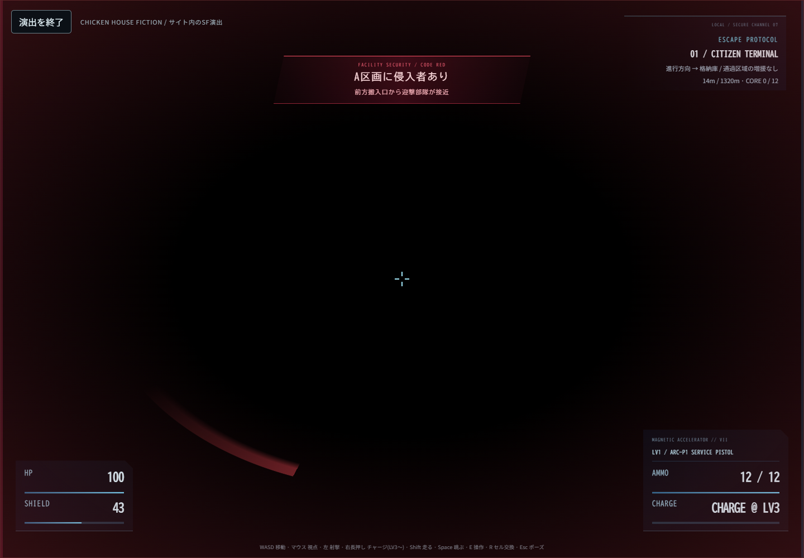
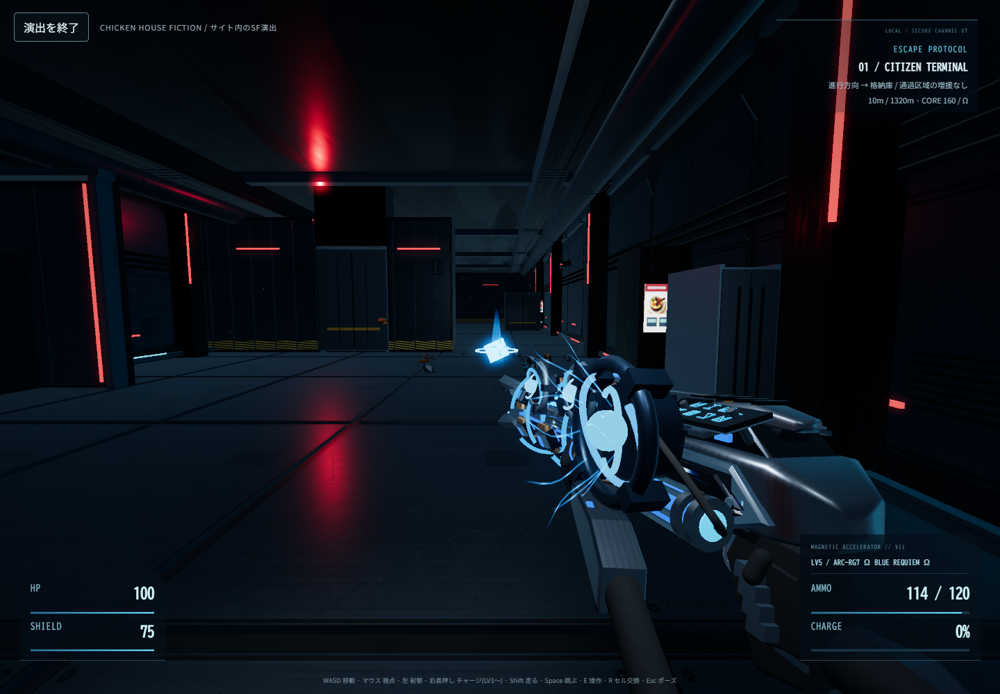
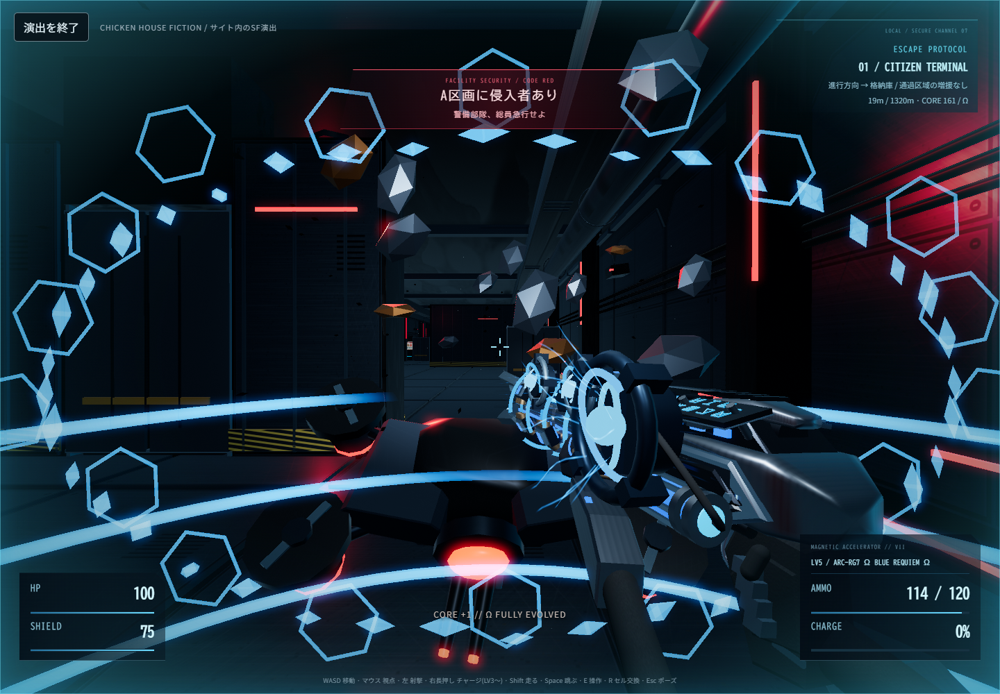
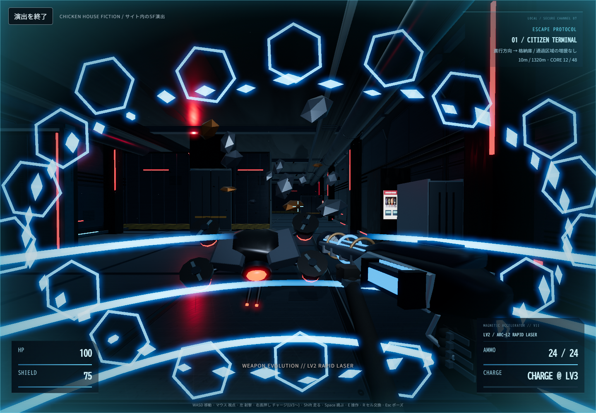
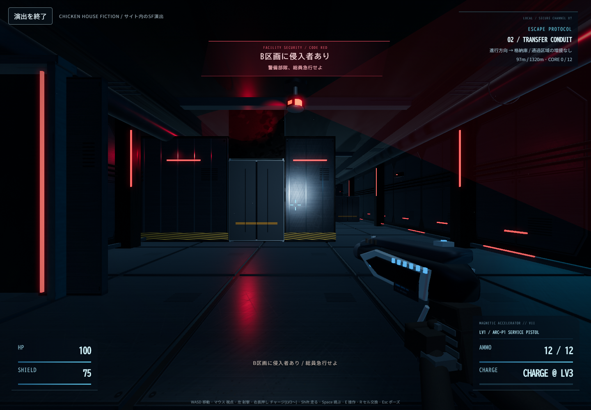
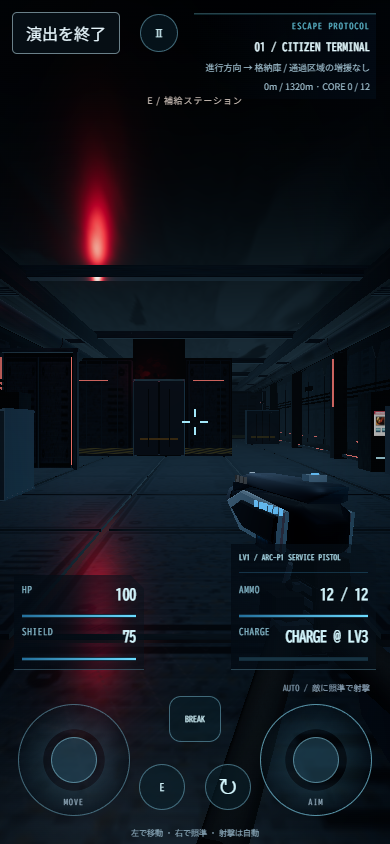
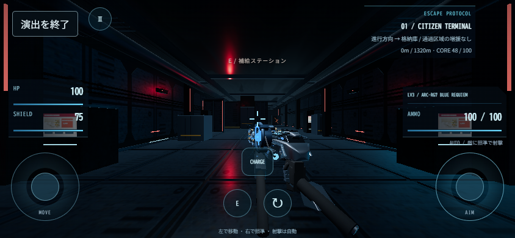
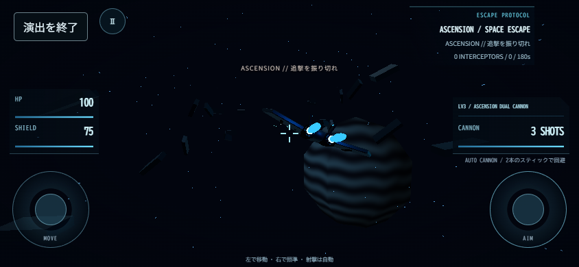

CHICKEN HOUSE / REALTIME WEBGL
ASCENSION v7
半分のコースに、前方の戦闘密度、明るい確定ドロップ、取得パルス、区画警報。
実際のWebGL出力を撮影。デバッグ準備・固定時刻の展示を含み、通常進行を省略しています。手動完走や実機スマホの記録ではありません。
実装・検証報告 · 通常サイトへブラウザー録画
自動検証操作を含む短い動作記録です。固定展示と同様、手動完走の証拠としては扱いません。
前方の戦闘・成長・警報










スマホ操作





